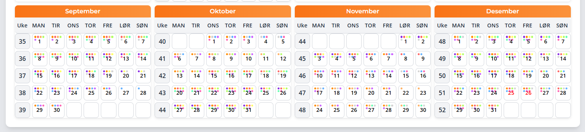

Om MinTurnus
Jeg har lenge hatt behov for å samle oversikt over turnuser for å lettere planlegge turer og aktiviteter med venner og familie. Det er utfordrende å finne tid sammen når mange i nettverket mitt jobber turnus. Dette verktøyet ble skapt for å gjøre akkurat det enklere, å finne åpninger i en travel hverdag.
MinTurnus er et gratis nettbasert hjelpemiddel for alle som jobber turnus. Her kan du samle dine egne skift i en oversiktlig kalender og enkelt dele planene med venner og kollegaer.
Hvorfor vi laget MinTurnus
Mange opplevde at det var vanskelig å vite når folk var på jobb eller hadde fri. Vi ønsket derfor et lett tilgjengelig verktøy som gjør planleggingen enklere, uten krav om ekstra apper.
Hovedfunksjoner
- Registrer og vis din egen turnus direkte i nettleseren.
- Inviter kollegaer og del skiftplaner med hverandre.
- Marker nære kollegaer for rask tilgang.
- Angi midlertidige avvik som ferie eller bytte av skift.
- Data lagres trygt på serveren slik at den følger deg på tvers av enheter.
- Legg til lokasjon som båt, rigg eller plattform på profilen slik at venner vet hvor du jobber.
Eksempel
Dette er et eksempel på hvordan turnusvisning kan se ut i MinTurnus.
Veien videre
Prosjektet utvikles fortløpende og tilbakemeldinger mottas med takk.
Bli med i dag
Opprett en gratis konto og prøv MinTurnus selv.
Registrer deg